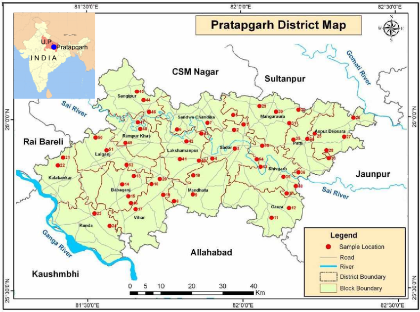
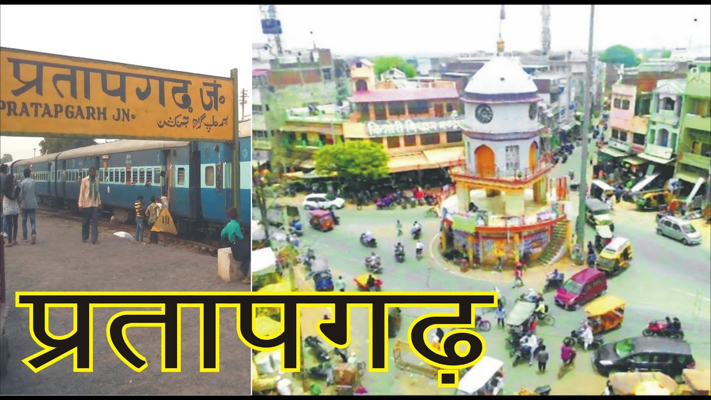
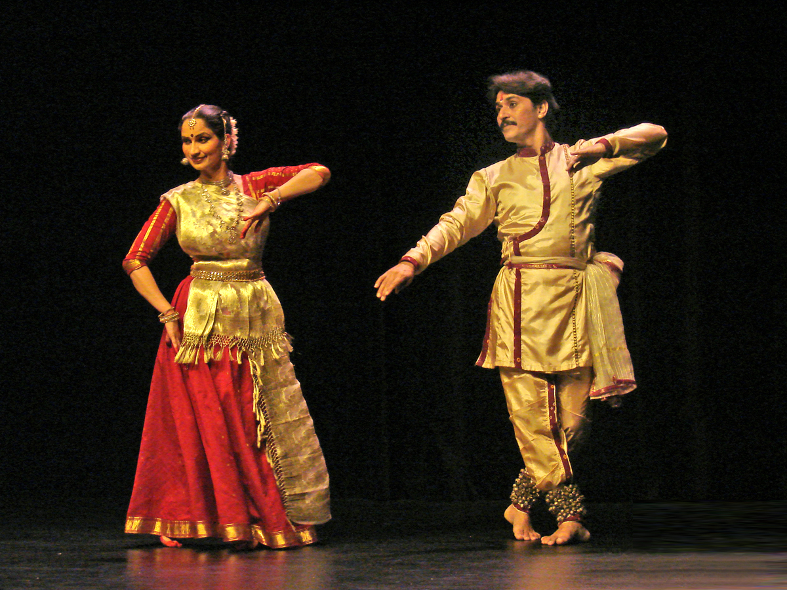
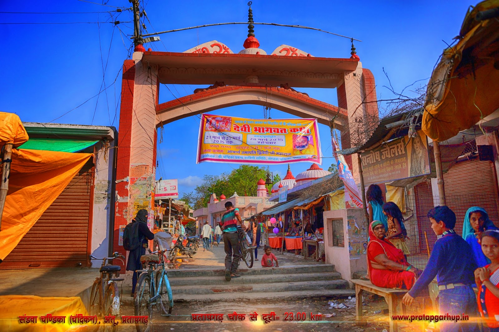
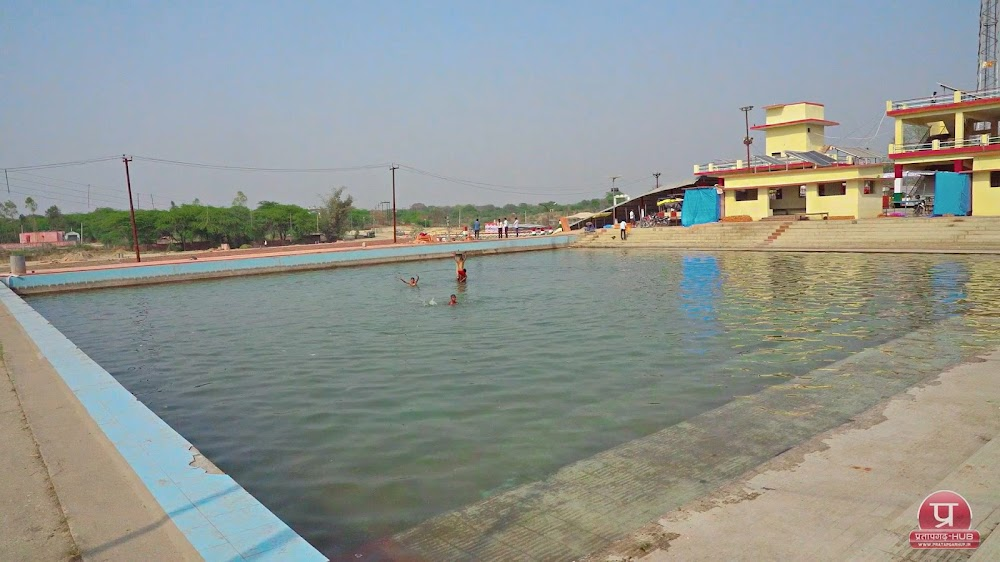
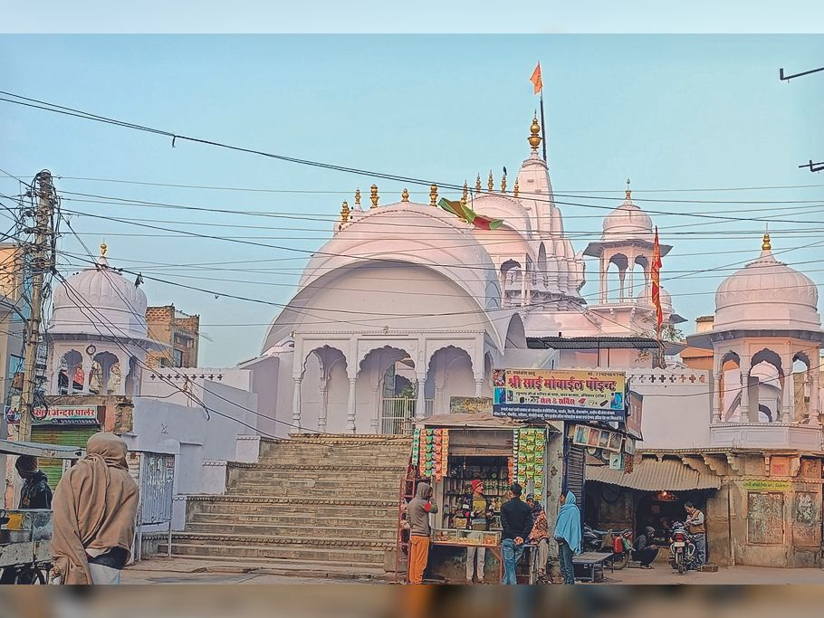
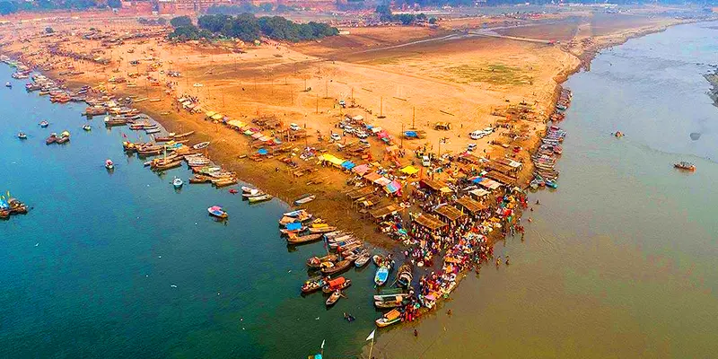

About Pratapgarh
Pratapgarh is a historical city in Uttar Pradesh, India. It is known for its rich cultural heritage, historical significance, and agricultural richness. The city is located in the central part of Uttar Pradesh, with Pratapgarh District being an important center for trade and industry.


How to Reach Pratapgarh
Pratapgarh is easily accessible by road and rail from major cities across India:
- From Delhi: You can take a direct train to Pratapgarh Junction (approx. 12 hours) or travel by road via NH19.
- From Lucknow: Pratapgarh is 120 km away, which is a 2-3 hour drive, or you can take a train.
- From Varanasi: Around 60 km from Pratapgarh, it can be reached via a 1.5-hour drive or train.
- From Kanpur: Pratapgarh is 200 km away, and can be reached in 4-5 hours by road.
Culture of Pratapgarh
Pratapgarh is renowned for its cultural traditions, including local festivals and folk performances:
- Festivals: The city celebrates various Hindu festivals like Diwali, Holi, and Dussehra with great zeal.
- Music & Dance: Traditional music and folk dance are integral parts of local life, with performances often held during festivals.
- Food: The local cuisine includes a variety of North Indian dishes such as kachori, puri, and aloo sabzi.

Languages Spoken
The primary languages spoken in Pratapgarh are:
- Hindi: Widely spoken as the official language of Uttar Pradesh.
- Awadhi: A dialect of Hindi, spoken by many locals.
- Urdu: Commonly spoken by the Muslim community.
Best Time to Visit
The best time to visit Pratapgarh is during the winter months from October to March, as the weather is cool and pleasant, ideal for sightseeing and outdoor activities.
Nearby Sightseeing Places
There are several places worth visiting near Pratapgarh:
- Chandrika Devi Temple: A famous temple located 40 km from Pratapgarh.
- Sarwan Taal: A serene lake perfect for picnics, located just a few kilometers away.
- Shri Raghunath Temple: A historical temple dedicated to Lord Rama.
- Allahabad (Prayagraj): Located 50 km away, this city is known for the Sangam, the confluence of the Ganges, Yamuna, and Saraswati rivers.



